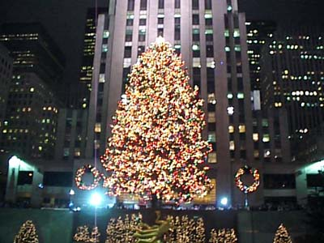

マンハッタンのクリスマス (97.12)
ロックフェラーセンターのクリスマス・ツリー

| ちょっと時期が遅くなりましたが、1ヶ月前の Manhattan の Rockefellar Center はこんな感じでした。 |

=ロックフェラー・センターのクリスマス・ツリー(97.12)=
|
ニューヨークで五番街というと、マンハッタンの中心にある大きな公園、セントラルパークのちょっと下の、高級なお店が立ちならんでいるところで、洗練されたイメージがあります。初めて観光客としてニューヨークへくるなら、たぶん旅行会社はこの五番街を中心にホテルをとってくれるんじゃないかな？ クリスマスのシーズンは、とにかくこの五番街がきれいです。私も何度か行きました。（風邪もひきました(^^;）。 この写真では見えないけど、このツリーの下の方はスケートリンクになっていて、せまいのですが、たくさんの人がスケートをしています(^^) 撮影：さわだ＠おじちゃま |
[ホームへ] [写真一覧へ]